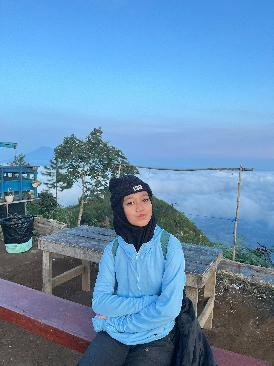

STMM
Sekolah Tinggi MultiMedia Yogyakarta
Program Studi Manajemen Informasi Komunikasi
NIM · 025241461125HALO, SELAMAT DATANG DI WEBSITE SAYA
Mahasiswa Manajemen Informasi Komunikasi
Saya adalah mahasiswa Sekolah Tinggi MultiMedia Yogyakarta. Website ini merupakan ruang perkenalan singkat untuk berbagi informasi tentang diri dan perjalanan akademik saya.
Kenali saya
01 / PERKENALAN
Perkenalkan, saya Amanda Zahra A.N., mahasiswa Program Studi Manajemen Informasi Komunikasi di Sekolah Tinggi MultiMedia Yogyakarta. Saya tertarik untuk terus belajar, mengembangkan wawasan, dan menambah pengalaman selama masa perkuliahan.
Melalui website ini, saya ingin memperkenalkan identitas serta latar belakang pendidikan saya secara sederhana.
02 / LATAR BELAKANG
Program Studi Manajemen Informasi Komunikasi
NIM · 02524146112503 / HAL YANG SAYA SUKAI
Bagian ini bisa dilengkapi dengan hobi, aktivitas favorit, atau bidang yang ingin saya pelajari lebih jauh.
04 / TERHUBUNG
Terima kasih sudah berkunjung. Silakan hubungi saya melalui email.
zmanda022@gmail.com